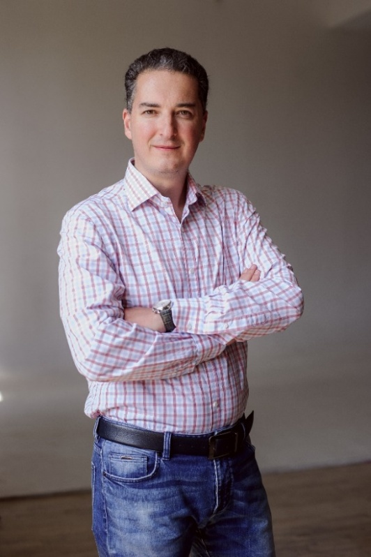

Strategy session
Build a shared picture, choose priorities, and turn strategy into decisions.
Facilitator / strategy and team sessions
An organizational consultant and facilitator who helps leadership teams align on what matters and turn a meaningful conversation into the next step.

When a team has plenty of experience and opinions, but lacks a shared focus, clarity, and a decision it is ready to own together.
Build a shared picture, choose priorities, and turn strategy into decisions.
Clarify meaning, roles, and ways of working that hold up in real life.
One-to-one work with owners and leaders in complex management situations.
Help a team keep new agreements alive and bring them into everyday work.
Approach
Dmitry combines senior management, organizational consulting, facilitation, and coaching experience. He holds the business task and the way people actually think, align, and act together at the same time.
Dmitry can join a strategy retreat, a team offsite, or a focused session within a corporate event.
View case studies